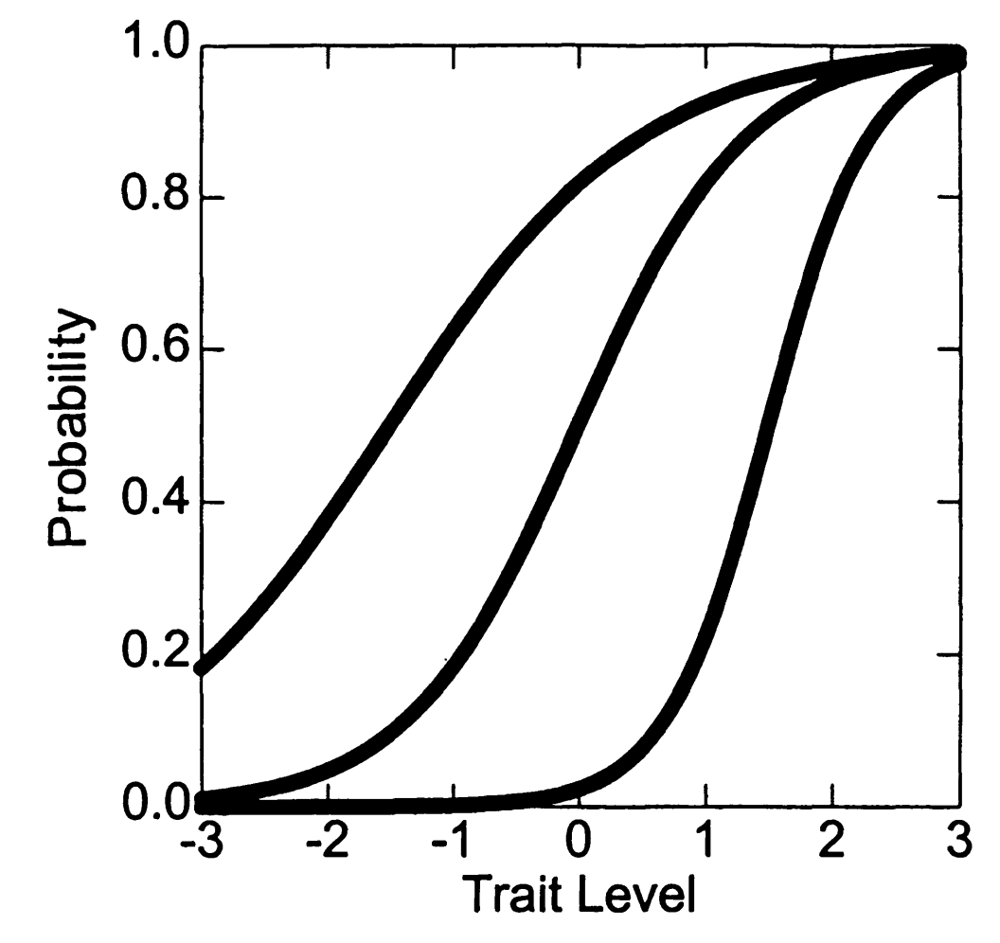
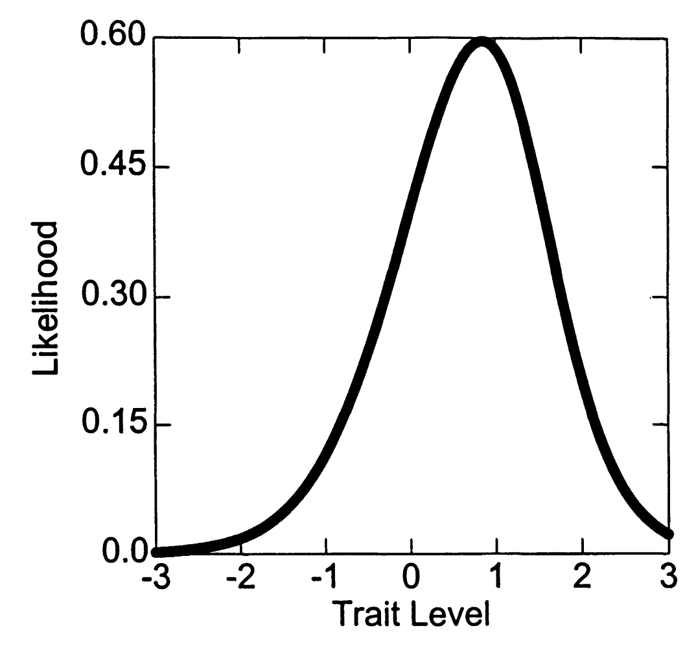
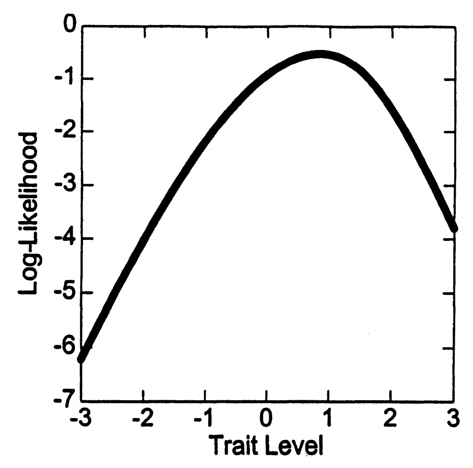
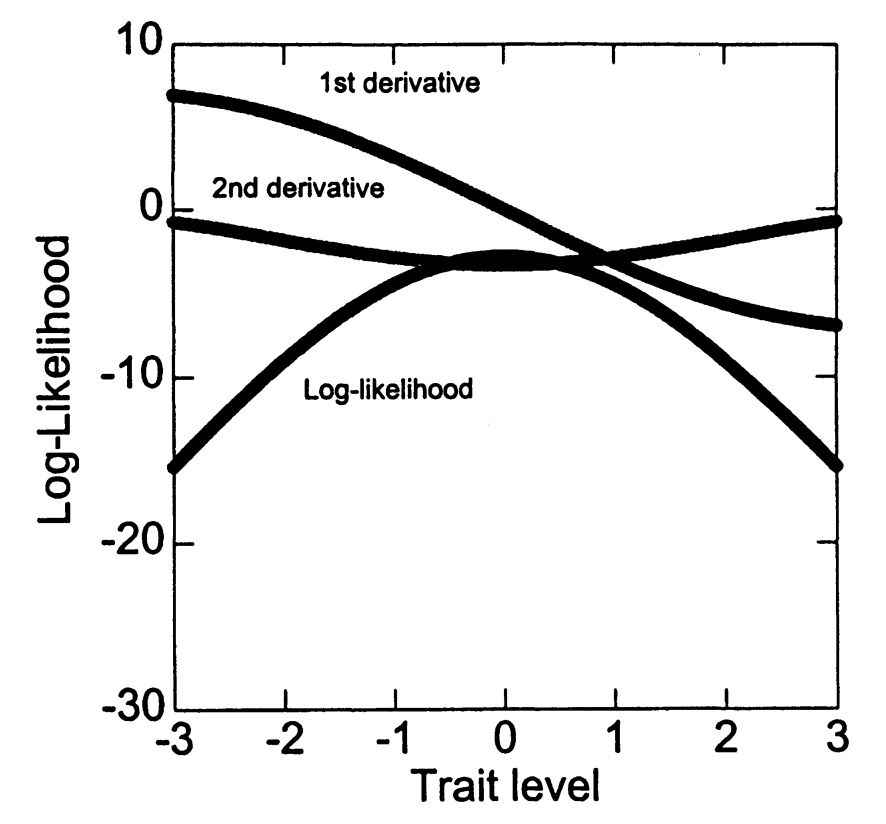
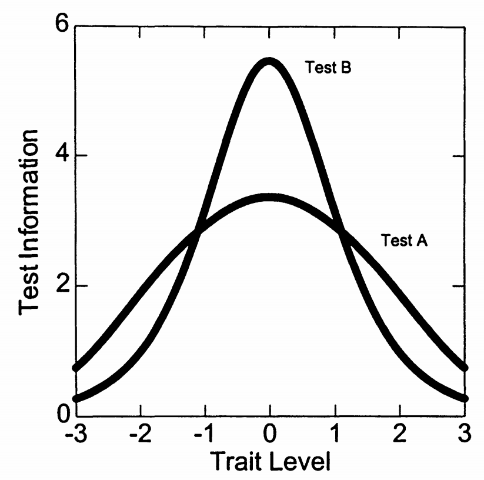
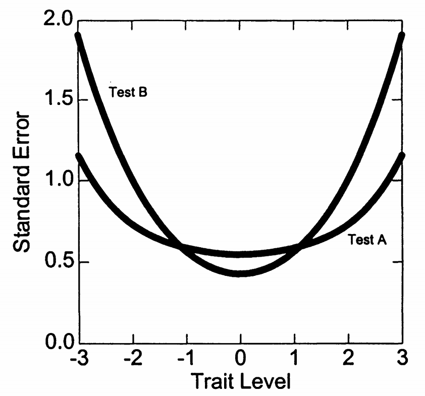
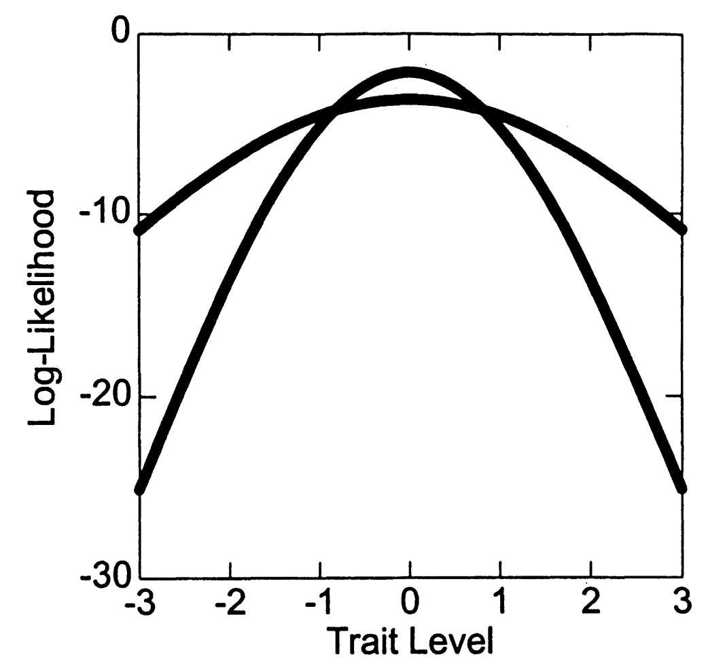

1. Maximum likelihood score¶
1.1 Basic idea: Find the most possible ability value¶
The core idea of Maximum Likelihood (ML) scoring can be expressed as a simple question:
ML core issues
Given the examinee's response pattern (which questions are answered correctly and which questions are answered incorrectly) and the known item parameters, what ability value \(\theta\) is most likely to produce this response pattern?
Let’s understand this idea through an everyday example:
Shooting ability analogy
Suppose a basketball player takes 10 shots and scores 7. We want to estimate his shooting ability.
- If his true shooting percentage is 30%, then the probability of shooting 7 out of 10 is very small
- If his true shooting percentage is 70%, then the probability of shooting 7 out of 10 is very high
- If his true shooting percentage is 90%, then the possibility of shooting 7 out of 10 becomes smaller again
Maximum likelihood estimation is to find the hit rate that makes the result "7 out of 10" most likely to occur.
1.2 Construction of likelihood function¶
1.2.1 From a single item to the overall model¶
Let us understand the construction process of likelihood function through a specific example.
Three question quiz example
Consider a three-question test that has been calibrated under the 2PL model. The item response function of the 2PL model is:
Among them:
- \(P_i\): Probability of answering item\(i\) correctly
- \(\theta\): examinee’s ability parameter
- \(\alpha_i\): discrimination parameter of item\(i\)
- \(\beta_i\): difficulty parameter of item\(i\)
item parameters：
- item1: \(\alpha_1 = 1.0\), \(\beta_1 = -1.5\) (easy questions, medium discrimination)
- item2: \(\alpha_2 = 1.5\), \(\beta_2 = 0.0\) (medium question, high discrimination)
- item3: \(\alpha_3 = 2.0\), \(\beta_3 = 1.5\) (difficult questions, high discrimination)
The item response curve (IRC) generated by these parameters is shown in Figure 7.1a:

Understand item response curve
The item response curve tells us:
- Horizontal axis: examinee's ability level \(\theta\)
- Vertical axis: Probability of answering the question correctly
- Curve Shape: S-shaped curve, the higher the ability, the greater the probability of correct answers
- Discrimination Effect: The higher the discrimination, the steeper the curve
- Difficulty Effect: The higher the difficulty, the further the curve moves to the right
1.2.2 Calculate the likelihood of a specific reaction¶
Before understanding likelihood, we need to clarify a key concept:
The key difference between likelihood vs probability
Probability:
- Pre-calculation: given parameters, predict the result
- Question format: "If the examinee's ability is \(\theta = 1.0\), what is the probability that he answers item1 correctly?"
- Calculate:
Likelihood:
- Post hoc calculation: given the result, evaluate the parameters
- Question format: "examinee answered item1 correctly, then what is the likelihood of \(\theta = 1.0\)?"
- Calculate:
For a specific reaction pattern, the likelihood contributed by each item is:
Single question likelihood calculation
If examinee's response on item\(i\) is \(u_i\) (1=correct answer, 0=wrong answer), then the likelihood of contribution to this question is:
This can be expressed in a more compact expression:
1.2.3 The product of local independence and likelihood¶
A core assumption of IRT is local independence. This concept needs to be understood carefully:
In-depth understanding of local independence
Surface related:
- In reality, the scores of different items are usually related
- Smart students tend to answer more items correctly
- This correlation is because they share an underlying ability factor
Conditionally independent:
- However, if we know the student's ability \(\theta\)
- Then the response of each item becomes independent
- It's like knowing your shooting ability, each shot is an independent event
expression:
Therefore, the likelihood of the entire reaction pattern is the product of the likelihood of each item:
Likelihood of complete response pattern
For the reaction vector \(\mathbf{u} = (u_1, u_2, ..., u_I)\), the total likelihood is:
For convenience, we often use \(Q_i(\theta) = 1 - P_i(\theta)\) to express the probability of wrong answer, so:
1.2.4 Specific calculation examples¶
Let us understand the construction of likelihood function through detailed calculation:
Calculate the likelihood function of reaction mode (1,1,0)
examinee reaction: answer items 1 and 2 correctly, answer item 3 incorrectly, that is, \(\mathbf{u} = (1, 1, 0)\)
For any \(\theta\) value, the likelihood is:
Let's calculate a few specific \(\theta\) values:
Step 1: Calculate the likelihood when \(\theta = -1.0\)
item1 (\(\alpha_1 = 1.0, \beta_1 = -1.5\)):
Calculate \(\exp(-0.5) = e^{-0.5} \approx 0.606\), so:
item2 (\(\alpha_2 = 1.5, \beta_2 = 0.0\)):
item3 (\(\alpha_3 = 2.0, \beta_3 = 1.5\)):
Therefore:
Figure 7.1b shows the complete likelihood function:

for three testsAs can be seen from the figure, the likelihood function reaches its maximum value at \(\theta \approx 0.90\). This means that an examinee with an ability level of 0.90 is most likely to produce a response pattern of (1,1,0).
1.3 Use of log likelihood¶
1.3.1 Why use log likelihood?¶
In practical calculations, we almost always use log-likelihood rather than raw likelihood. There are profound computational reasons for this:
Numerical Computing Challenges
Problem 1: Numerical Underflow
- Probability values are all between 0 and 1
- Multiplication of multiple small probabilities will produce extremely small values.
- Example:
- Multiply 10 by 0.5: \(0.5^{10} = 0.00098\)
- 20 multiplied by 0.5: \(0.5^{20} = 0.00000095\)
- 50 multiplied by 0.5: \(0.5^{50} = 8.88 \times 10^{-16}\)
- The precision of floating point numbers in computers is limited, and the smallest value may be regarded as 0
Problem 2: Difficulty in optimization
- Finding the maximum value requires calculating the derivative
- The calculation of the derivative of the product is complex: \((f \cdot g)' = f' \cdot g + f \cdot g'\)
- The derivative of the product of multiple functions can become extremely complex
1.3.2 Advantages of logarithmic transformation¶
Logarithmic transformation takes advantage of the computational properties of logarithms to solve the above problems:
Properties of logarithmic transformation
Key Property: Logarithms convert multiplication into addition
Apply to likelihood function:
Original likelihood:
Take the logarithm:
Expand using logarithmic properties:
Summary of advantages:
- The product becomes a sum to avoid numerical underflow.
- Derivative calculation is greatly simplified: \((\sum f_i)' = \sum f_i'\)
- The most important thing is: the position of the maximum value remains unchanged!
1.3.3 Numerical properties of log likelihood¶
Understanding the numerical range of the log-likelihood is important for interpreting the result:
Understanding the numerical value of log-likelihood
Understanding of numerical range:
- Since \(0 < P < 1\), so \(\log P < 0\) (base natural logarithm)
- The log-likelihood is always negative
- The closer it is to 0, the greater the likelihood (because it is a negative number)
Specific numerical examples:
- \(P = 0.9\): \(\log(0.9) \approx -0.105\) (high probability)
- \(P = 0.5\): \(\log(0.5) \approx -0.693\) (medium probability)
- \(P = 0.1\): \(\log(0.1) \approx -2.303\) (very low probability)
Explanation Example:
- \(\log L = -10\): Relatively high likelihood (average contribution per question is about -1)
- \(\log L = -100\): Relatively low likelihood (average contribution per question is about -10)
- \(\log L = -1000\): extremely low likelihood (almost impossible)
Figure 7.1c shows the logarithmic likelihood function:

for three testsNote that it has the same maximum position as the original likelihood function, but the value range and shape are different.
1.4 Newton-Raphson algorithm¶
Now that we know how to build the likelihood function, the next step is to find the \(\theta\) value that makes it largest. The Newton-Raphson algorithm is a classic method to solve this optimization problem.
1.4.1 Basic idea of algorithm¶
Strategies for finding the maximum
Goal: Find the \(\theta\) value that maximizes the log likelihood function
Key Insight: At the maximum, the slope (first derivative) of the function is zero
It's like climbing a mountain to find the top:
- If the slope is positive, it means you are still going uphill and continue moving forward.
- If the slope is negative, it means you have passed the top of the mountain and need to retreat
- When the slope is zero, we are at the top of the mountain
Newton-Raphson Strategy:
- Start with an initial guess \(\theta_0\)
- Calculate the slope of the current position (first derivative)
- Calculate the rate of change of slope (second derivative)
- Based on these two pieces of information, adjust the position intelligently
- Repeat until slope approaches zero
1.4.2 Derivation process¶
Let us rigorously derive the Newton-Raphson formula:
Newton-Raphson iterative formula derivation
Goal: Find \(\theta^*\) such that \(L'(\theta^*) = 0\)
Taylor Expansion:
Near \(\theta_0\), perform a first-order Taylor expansion on \(L'(\theta)\):
This approximation tells us that around \(\theta_0\), the first derivative is approximately linear.
Solve for zero points:
Let \(L'(\theta) = 0\), we get:
Solve \(\theta\):
Iteration formula:
Intuition of this formula:
- The molecule \(L'(\theta)\) tells us how far we are from zero
- The denominator \(L''(\theta)\) tells us how fast the function changes
- The ratio tells us how much we should move
1.4.3 Derivative formula of 2PL model¶
To use the Newton-Raphson algorithm, we need to calculate the first and second derivatives of the logarithmic likelihood function. Let us derive these formulas in detail:
Derivative derivation of 2PL model
Log likelihood function:
First derivative (derivative with respect to \(\theta\)):
First find the derivative of the single term:
Use the chain rule:
Now we need to calculate \(\frac{\partial P_i}{\partial\theta}\). For 2PL model:
Use the chain rule:
Note:
Therefore:
Substitute into the original formula:
Simplify:
Therefore, the first derivative is:
Second derivative (continue to derive the derivative of \(\theta\)):
Therefore, the second derivative is:
Key Observations:
- The sign of the first derivative \(L'(\theta)\) can be positive or negative, depending on the difference between the observed response \(u_i\) and the predicted probability \(P_i(\theta)\): if \(u_i > P_i(\theta)\) the derivative is positive, indicating the need to increase \(\theta\); otherwise it is negative.
- The second derivative \(L''(\theta)\) is always negative for the following reasons:
Because \(\alpha_i^2 > 0\) and \(P_i(\theta)(1 - P_i(\theta)) > 0\) (with probability within \((0,1)\)).
- A negative second derivative means that the logarithmic likelihood function is strictly concave, thus guaranteed to have a unique maximum value within the domain.
- Absolute value of the second derivative:
The Test Information Function equal to that point, also known as the Fisher Information, measures the accuracy of the estimate of the current ability point.
Supplement: Fisher’s rigorous definition of information content¶
In Item Response Theory, Fisher information volume is defined as:
For the 2PL model, the second derivative of the log-likelihood of each term is exactly a constant expression (not dependent on \( u_i \)):
Therefore, the total amount of information is:
This expression itself is the conditional expectation form and represents the measurement accuracy of the test at a given ability level.
1.4.4 Detailed explanation of algorithm steps¶
Now we can give the complete implementation steps of the Newton-Raphson algorithm:
Specific steps of Newton-Raphson algorithm
Input:
- Reaction vector: \(\mathbf{u} = (u_1, u_2, \dots, u_I)\)
- item parameters: discrimination \(\alpha_i\), difficulty \(\beta_i\), \(i = 1, 2, \dots, I\)
- Initial value: \(\theta_0\) (usually set to 0)
- Tolerance threshold: \(\epsilon = 0.001\)
- Maximum number of iterations: \(N_{\mathrm{iter}} = 50\) (used to prevent non-convergence)
Step 1: Initialization
- Set \(\theta = \theta_0\)
- Set iteration count \(k = 0\)
Step 2: Iterative process
Repeat the following steps until convergence conditions are met:
**a. Calculate the probability of correct answer for each question: **
**b. Calculate the first derivative (gradient): **
**c. Calculate the second derivative (curvature): **
**d. Calculate update amount: **
e. Update ability estimate:
f. Check convergence conditions:
- If \(|\varepsilon| < \epsilon\), it is considered converged and exits the loop
- If \(k \geq N_{\mathrm{iter}}\), force the iteration to stop (may not converge)
g. Update status:
- Set \(\theta = \theta_{\text{new}}\)
- Iteration count \(k = k + 1\)
Step 3: Output the result
- Final ability estimate \(\hat{\theta}\)
- Convergence status (whether convergence was successful)
- Total number of iterations \(k\)
1.4.5 Specific calculation examples¶
Let us understand this process through a detailed example. Consider a typical response pattern from Quiz A:
Detailed example of Newton-Raphson iteration process
Settings:
- Test A: 10 items, all items discrimination\(\alpha_i = 1.5\)
- difficulty parameter: \(\beta = [-2.0, -1.5, -1.0, -0.5, 0.0, 0.0, 0.5, 1.0, 1.5, 2.0]\)
- Response mode: \((1,1,1,1,1,0,0,0,0,0)\) (the first 5 questions are answered correctly, the last 5 questions are answered incorrectly)
- Initial guess: \(\theta_0 = -1.0\)
Iteration 1 (\(\theta = -1.0\)):
Calculate \(P_i(-1.0)\) for each question:
- item 1:
- item 2:
- item 3:
- item 4:
-item 5:
- \(P_6(-1.0) = 0.182\) (same as \(P_5\) as \(\beta_6 = \beta_5 = 0.0\))
- item 7:
-item 8:
- item 9：
-item 10:
Compute the first derivative:
Compute the second derivative:
Update volume:
New estimate:
| Iterate | \(\theta\) | First derivative \(L'(\theta)\) | Second derivative \(L''(\theta)\) | Update amount \(\varepsilon\) | New\(\theta\) |
|---|---|---|---|---|---|
| 1 | \(-1.000\) | \(3.213\) | \(-2.920\) | \(-1.100\) | \(0.100\) |
| 2 | \(0.100\) | \(-0.303\) | \(-3.364\) | \(0.090\) | \(0.010\) |
| 3 | \(0.010\) | \(-0.034\) | \(-3.368\) | \(0.010\) | \(0.000\) |
| 4 | \(0.000\) | \(0.000\) | \(-3.368\) | \(0.000\) | stop |
Understanding of the convergence process:
- The initial position \(\theta = -1.0\) underestimates the true capability
- The positive first derivative (3.213) indicates that we are to the left of the maximum and need to move to the right
- First iteration heavily adjusted (1.100 move), slightly over-adjusted
- Gradually fine-tune adjustments in subsequent iterations
- Convergence reached after 4 iterations (\(|\varepsilon| < 0.001\))
Figure 7.2 illustrates this process visually:

1.4.6 Convergence from different starting points¶
An important property of the Newton-Raphson algorithm is its robustness - it usually converges to the same solution from different starting points:
Algorithm robustness verification
Let's test the convergence of the same reaction pattern \((1,1,1,1,1,0,0,0,0,0)\) from different starting points:
Starting point 1: Underestimating ability (\(\theta_0 = -2.0\))
| Iterate | \(\theta\) | \(L'(\theta)\) | \(L''(\theta)\) | \(\varepsilon\) | New\(\theta\) |
|---|---|---|---|---|---|
| 1 | \(-2.000\) | \(4.875\) | \(-2.055\) | \(-2.373\) | \(0.373\) |
| 2 | \(0.373\) | \(-1.224\) | \(-3.237\) | \(0.378\) | \(-0.005\) |
| 3 | \(-0.005\) | \(0.025\) | \(-3.368\) | \(-0.007\) | \(0.002\) |
| 4 | \(0.002\) | \(-0.007\) | \(-3.368\) | \(0.002\) | \(0.000\) |
Starting point 2: Overestimating ability (\(\theta_0 = 1.5\))
| Iterate | \(\theta\) | \(L'(\theta)\) | \(L''(\theta)\) | \(\varepsilon\) | New\(\theta\) |
|---|---|---|---|---|---|
| 1 | \(1.500\) | \(-4.572\) | \(-2.445\) | \(1.870\) | \(-0.370\) |
| 2 | \(-0.370\) | \(1.200\) | \(-3.254\) | \(-0.369\) | \(-0.001\) |
| 3 | \(-0.001\) | \(0.003\) | \(-3.368\) | \(-0.001\) | \(0.000\) |
Starting point 3: Extremely overvalued (\(\theta_0 = 3.0\))
| Iterate | \(\theta\) | \(L'(\theta)\) | \(L''(\theta)\) | \(\varepsilon\) | New\(\theta\) |
|---|---|---|---|---|---|
| 1 | \(3.000\) | \(-6.867\) | \(-0.922\) | \(7.451\) | \(-4.451\) |
| 2 | \(-4.451\) | \(5.565\) | \(-0.691\) | \(-8.054\) | \(3.603\) |
| 3 | \(3.603\) | \(-7.160\) | \(-0.628\) | \(11.401\) | \(-7.798\) |
| ... | ... | ... | ... | ... | ... |
Observe the result:
- From a reasonable starting point (-2.0 to 1.5), the algorithm converges quickly (3-4 iterations)
- From an extreme starting point (3.0), oscillations may occur, requiring more iterations
- But they all converge to the same value in the end: \(\theta = 0.0\)
Practical Suggestions:
- Usually use \(\theta_0 = 0\) as the starting value (population mean)
- Or use a linear transformation of the raw score number as the starting value
- Set the maximum number of iterations to prevent infinite loops in extreme cases
1.5 Statistical properties of ML estimation¶
Understanding the statistical properties of ML estimates is critical to correctly using and interpreting results.
1.5.1 Asymptotic properties¶
ML estimation has some excellent large-sample properties that make it the gold standard for statistical inference:
Three major asymptotic properties of ML estimation
1. Asymptotic Unbiasedness
When the item quantity is \(I \to \infty\):
This means:
- The expectation estimated by ML is equal to the true parameter value
- On average, ML does not systematically overestimate or underestimate capabilities
- But note: this is an asymptotic property, and small samples may be biased
2. Asymptotic Efficiency
ML estimates reach the Cramér-Rao lower bound:
Among them, \(I(\theta)\) is the amount of Fisher information. This means:
- Among all asymptotically unbiased estimators, the ML estimate has the smallest variance
- No other estimation method does better (in an asymptotic sense)
- ML estimation makes full use of the information in the data
3. Asymptotic Normality
When \(I \to \infty\):
More precisely:
This means:
- The distribution estimated by ML is close to the normal distribution
- Can construct confidence interval and hypothesis testing
- standard error can be calculated directly from the amount of information
1.5.2 Calculation of standard error¶
Standard error (SE) quantifies the uncertainty of the estimate:
The theory and calculation of standard error
Theoretical formula (based on Fisher information):
Where Fisher information is defined as:
Actual calculations (based on observational information):
In practice we use observed information:
For 2PL model:
Explanation:
- The larger the absolute value of the second derivative, the more accurate the estimate
- This reflects how "sharp" the likelihood function is near its maximum value
- A sharp peak means we have more confidence in the location of the maximum
Example Calculation:
For the previous example, at \(\hat{\theta} = 0.0\):
Therefore:
1.5.3 Limitations of ML estimation¶
Although ML estimation has many excellent properties, there are also some important limitations:
Main issues with ML methods
1. Problems with extreme reaction patterns
For some reaction patterns, there are no finite values for ML estimation:
-
All correct answers: \(\mathbf{u} = (1,1,1,...,1)\)
-
likelihood function increases monotonically
- \(\hat{\theta} = +\infty\)
- Limited estimates are not available
-
All wrong answers: \(\mathbf{u} = (0,0,0,...,0)\)
-
likelihood function decreases monotonically
- \(\hat{\theta} = -\infty\)
- Limited estimates are not available
Explanation:
When all answers are correct, \(u_i = 1\), and \(P_i(\theta) < 1\), so \(L'(\theta) > 0\) always holds.
2. Small sample bias
Asymptotic properties require a large number of items to achieve:
- Item number \(< 20\): There may be an obvious bias
- item number \(20-50\): bias decreases but still exists
- item number \(> 50\): close to asymptotic properties
The direction of bias:
- Usually shrinks towards the center (biased towards 0)
- Extreme abilities have a larger bias
3. Special issues with the 3PL model
When the model contains guessing parameters:
-The likelihood function may have multiple local maxima - Newton-Raphson may converge to local rather than global maximum - Needs more careful starting value selection
4. The impact of model misconfiguration
If the real model is not 2PL:
- ML estimates may be biased
- standard error may be underestimated
- Asymptotic properties may not hold
1.6 Example analysis of ML scoring¶
Let’s gain a deeper understanding of the characteristics of ML scoring through concrete examples.
1.6.1 Result of Rasch type test (Test A)¶
First, let’s look at what happens when all items have the same distinction:
ML scoring result for Quiz A
Quiz Settings:
- 10 items, all items discrimination\(\alpha_i = 1.5\)
- Symmetrical distribution of difficulty: \(\beta = [-2.0, -1.5, -1.0, -0.5, 0.0, 0.0, 0.5, 1.0, 1.5, 2.0]\)
Different Response Patterns Scored 5 Points:
| examinee | reaction mode | raw score number | \(\hat{\theta}\) | \(SE\) | Remarks |
|---|---|---|---|---|---|
| 1 | \(1111100000\) | 5 | \(0.00\) | \(0.54\) | Perfect Guttman Mode |
| 2 | \(0111110000\) | 5 | \(0.00\) | \(0.54\) | Missed the easiest question |
| 3 | \(0011111000\) | 5 | \(0.00\) | \(0.54\) | 5 questions in the middle |
| 4 | \(0001111100\) | 5 | \(0.00\) | \(0.54\) | 5 questions in the middle |
| 5 | \(0000111110\) | 5 | \(0.00\) | \(0.54\) | 5 questions in the middle |
| 6 | \(0000011111\) | 5 | \(0.00\) | \(0.54\) | Answer the 5 hardest questions correctly |
What is the perfect Guttman pattern?
The Guttman model refers to an ideal response structure: if a subject answers a question correctly, he should also answer all questions that are easier than it; conversely, if he answers a question incorrectly, he should miss all questions that are more difficult than it.
- Assume that the items in the test are numbered from easy to difficult from question 1 to question 10
- An example of a perfect Guttman pattern is:
1111100000 - Indicates that the examinee answered the first 5 easy questions correctly and the last 5 difficult questions incorrectly.
Under IRT Rasch model:
- All examinees with a total score of 5 have the same ability estimate \(\hat{\theta}\)
- But Guttman mode is logically consistent and fully consistent with the difficulty ranking
- So this mode is considered as "ideal response mode"
Comparison example:
| examinee | reaction mode | total score | Remarks |
|---|---|---|---|
| A | 1111100000 |
5 | Perfect Guttman Mode ✅ |
| B | 0000011111 |
5 | Answer the 5 hardest questions correctly ❗ |
Although the two examinees have the same score, A's response pattern is more in line with the logic of "increasing ability → successful answer". The response structure of B may indicate abnormality or misjudgment.
The core feature of the Rasch model: sufficient statistic
Observe the result:
- All examinees with 5 points get exactly the same ability estimate (\(\hat{\theta} = 0.00\))
- The standard error is also exactly the same (\(SE = 0.54\))
- Which items are answered correctly does not affect the estimate at all
Explanation:
In the Rasch model (equal discrimination model), the likelihood function can be factorized:
Take the logarithm:
Note:
- The first item only depends on total score\(\sum u_i\)
- The second item does not contain \(\theta\) and has no impact on maximization
- The third term does not depend on a specific response pattern
Therefore, \(\sum u_i\) (the original total score) is the sufficient statistic of \(\theta\)!
Actual meaning:
- Simplified the scoring process (only total score is required)
- Supported "item exchangeability"
- Makes adaptability testing easier to implement
1.6.2 Result of Variation Discrimination Test (Test B)¶
In this section, we explore how maximum likelihood estimation (MLE) distinguishes ability levels when items have different discrimination parameters. Compared with the previous test A with the same discrimination, the discrimination of each item in test B is different.
Comparison of ML scoring results for test B
Quiz settings:
- 10 questions, item difficulty is \(β_i = 0.0\)
- Increasing order of distinction: \(α = [1.0, 1.0, 1.2, 1.3, 1.4, 1.5, 1.6, 1.7, 1.8, 1.9]\)
| examinee | reaction mode | raw score number | Quiz A | Quiz B | ||
|---|---|---|---|---|---|---|
| \(\hat{\theta}\) | \(SE\) | \(\hat{\theta}\) | \(SE\) | |||
| 1 | \(1111100000\) | 5 | \(0.00\) | \(0.54\) | \(-0.23\) | \(0.43\) |
| 2 | \(0111110000\) | 5 | \(0.00\) | \(0.54\) | \(-0.13\) | \(0.43\) |
| 3 | \(0011111000\) | 5 | \(0.00\) | \(0.54\) | \(-0.04\) | \(0.42\) |
| 4 | \(0001111100\) | 5 | \(0.00\) | \(0.54\) | \(-0.04\) | \(0.42\) |
| 5 | \(0000111110\) | 5 | \(0.00\) | \(0.54\) | \(0.13\) | \(0.43\) |
| 6 | \(0000011111\) | 5 | \(0.00\) | \(0.54\) | \(0.23\) | \(0.43\) |
Why are the raw scores the same but the ability estimates different under the 2PL model?
Starting from the first derivative:
In the 2PL model, the derivative of the log-likelihood is:
The optimal ability estimate \(\hat{\theta}\) satisfies \(L'(\hat{\theta}) = 0\), that is
On the left is the "actual weighted score" and on the right is the "model predicted weighted score".
Numerical example:
Assume that the discrimination parameter of 10 questions is
α = [1.0, 1.0, 1.2, 1.3, 1.4, 1.5, 1.6, 1.7, 1.8, 1.9]
Their sum is \(\sum α_i = 14.4\). Let’s first look at the prediction weighted scores of the model under different \(\theta\):
| θ | definition | Σα·P_i(θ) ≈ | Description |
|---|---|---|---|
| −1.0 | \(P_i(-1)=1/(1+e^{α_i})\) (very low) | 2.74 | Prediction score is low |
| −0.5 | \(P_i(-0.5)=1/(1+e^{0.5α_i})\) (medium to low) | 4.71 | Prediction score is medium |
| 0.0 | \(P_i(0)=1/2\) (same benchmark) | 7.20 | The highest predicted score |
Let’s look at the actual weighted scores of the two students (both answered 3 questions correctly):
- Student A answered \(\alpha=[1.0,1.0,1.2]\) correctly, the actual weighted total score
- Student B answered \(\alpha=[1.7,1.8,1.9]\) correctly, actual weighted total score
Since the equation to be solved by MLE is
Therefore:
- For A, \(\sum \alpha_i P_i(\theta) = 3.2\) is required, which falls between [2.74, 4.71] ⇒ \(\hat{\theta}_A\in(-1.0,\,-0.5)\)
- For B, \(\sum \alpha_i P_i(\theta) = 5.4\) is required, which falls between [4.71, 7.20] ⇒ \(\hat{\theta}_B\in(-0.5,\,0.0)\)
Conclusion: \(\hat{\theta}_B > \hat{\theta}_A\), even if the two people only answered 3 questions correctly, B who answered the high-discrimination questions correctly got a higher ability estimate.
Key Points Review:
- Left \(\sum \alpha_i u_i\) is the known "observation weighted score"
- Right \(\sum \alpha_i P_i(\theta)\) is a monotonically increasing function with respect to \(\theta\)
- The higher the actual weighted score, the model must increase \(\theta\) to balance both sides
- This just shows that the value of answering high-discrimination questions correctly is greater, so the ability estimate will be higher
Regarding the unity of the prediction weighted score function \(f(\theta)\), in the maximum likelihood equation of the 2PL model:
- Prediction Weighted Score Function
It only depends on the parameters of the all \(I\) item \(\{\alpha_i,\beta_i\}\) of the test, and has nothing to do with the specific examinee.
- Observation Weighted Score
Reflects the actual response pattern \(\{u_i\}\) of a certain examinee on the same set of questions, which varies from person to person.
maximum likelihood estimation \(\hat\theta\) by Eq.
OK:
- In the same set of tests, all examinees share the same curve \(f(\theta)\).
- Because \(T\) is different for each person, the \(\hat\theta\) solved is also different.
Range of index \(i\)
- \(i=1,2,\dots,I\) represents the items from \(1\) to \(I\) in the test.
- For example, \(I=10\) in test B, then \(i\) ranges from 1 to 10.
Additional Note
- The \(f_A(\theta)\) and \(f_B(\theta)\) curves for Quiz A and Quiz B are different because their \(\alpha_i\) (and/or \(\beta_i\)) are different.
- But within the same test, this curve is consistent for all examinees.
The paradox of raw score
In the 2PL model, the following phenomenon may occur: Examinees with higher raw scores have lower estimation capabilities.
| examinee | reaction mode | raw score number | \(\hat{\theta}\) | \(SE\) |
|---|---|---|---|---|
| 14 | \(0000000111\) | 3 | \(-0.34\) | \(0.44\) |
| 18 | \(1111000000\) | 4 | \(-0.51\) | \(0.46\) |
**Why is this happening? **
- examinee14 answered correctly \(\alpha = 1.7, 1.8, 1.9\), with a weighted score of \(T = 5.4\)
- examinee18 answered correctly \(\alpha = 1.0, 1.0, 1.2, 1.3\), with a weighted score of \(T = 4.5\)
Although examinee18 has more correct answers, its overall ability estimate is lower because these questions are weak in discriminating abilities.
Summary:
- 2PL scoring will not only look at "how many questions you got right", but "which questions you got right"
- The higher the discrimination, the more effective the item can be in judging ability differences.
- maximum likelihood estimation will adjust \(\hat{\theta}\) based on this information, reflecting the advantages of IRT
1.6.3 The role of test information¶
The test information function tells us the accuracy of the measurement at different ability levels:

Interpretation of information function
Test A (equal discrimination)
- All items have the same discrimination, and the information function takes on a wider and flatter bell shape.
- Maximum message is around 3.5
- The information is slightly concentrated near \(\theta = 0\), but the attenuation is gentle on both sides
- Suitable for balanced measurement of different ability levels
Test B (variable discrimination)
- item discrimination increases, and the information function peak becomes sharper and higher
- Maximum message is around 5.5
- Information is highly concentrated near \(\theta = 0\), and information in extreme areas is sparse
- Best suited for fine differentiation of medium ability examinees
actual meaning
- Equal-discrimination design (Quiz A): Maintains stable accuracy over a wide range of ability levels
- Variable range design (Test B): Provides higher measurement accuracy in the average capability range
- Which one you choose depends on your testing goals: either balanced coverage or mid-section focus
The standard error curve is the "mirror image" of the information curve:

Explanation of standard error
Basic relationship:
Observe the result:
- Where information is high, standard error is low
- Both tests have large standard errors at extreme ability levels
- Test B has a slightly smaller standard error near \(\theta = 0\)
Practical Application:
- If you are primarily concerned with distinguishing examinee near average ability, choose Test B
- If you need precise measurements over a wider range, choose Test A
1.6.4 System impact of discrimination parameter¶
In order to gain a deeper understanding of the role of discrimination, let us systematically change the discrimination parameter of test A:
Systematic effects of discrimination parameters
Keep the difficulty parameter of test A unchanged, but change the distinctiveness of all items:
| examinee | reaction mode | raw score number | \(\alpha = 1.0\) | \(\alpha = 2.0\) | \(\alpha = 2.5\) | |||
|---|---|---|---|---|---|---|---|---|
| \(\hat{\theta}\) | \(SE\) | \(\hat{\theta}\) | \(SE\) | \(\hat{\theta}\) | \(SE\) | |||
| 19 | \(1111100000\) | 5 | \(0.00\) | \(0.73\) | \(0.00\) | \(0.45\) | \(0.00\) | \(0.39\) |
| 15 | \(0000000000\) | 0 | \(-2.73\) | \(1.11\) | \(-1.98\) | \(0.62\) | \(-1.88\) | \(0.52\) |
| 23 | \(1111111110\) | 9 | \(2.73\) | \(1.11\) | \(1.98\) | \(0.62\) | \(1.88\) | \(0.52\) |
Summary of the rules of differentiation influence
As the discrimination increases:
-
ability estimate shrinks toward the center
-
When \(\alpha = 1.0\): the range is \([-2.73, 2.73]\)
- When \(\alpha = 2.5\): the range is \([-1.88, 1.88]\)
- Reason: High discrimination makes items more sensitive in medium ability areas
-
standard error generally decreases
-
raw score 5 points: SE dropped from 0.73 to 0.39
- raw score 0 points: SE dropped from 1.11 to 0.52
- Reason: More quiz information
-
likelihood function becomes more “sharp”
-
Figure 7.5 illustrates this change
- Sharper means more certainty about the location of abilities

The deeper meaning of distinction
Measurement Perspective:
- Discrimination reflects the item's ability to distinguish different ability examinees
- Highly differentiated items are "good" items
- But too high a resolution may narrow the measurement range
Statistical Perspective:
- Discrimination affects the amount of Fisher information -The amount of information is proportional to the square of the discrimination
- This explains why high resolution reduces standard error
Practical Perspective:
- Need to trade off between measurement accuracy and measurement range
- Mixing items with different degrees of distinction may be the optimal strategy
- This is exactly how computer-adaptive testing is designed
1.7 Summary and Outlook of ML Scoring¶
Core Points of ML Scoring Methods
Advantages:
- Solid theoretical foundation: Based on the likelihood principle and supported by profound statistical theory
- Asymptotic Optimality: Unbiased, effective, and normal under large samples
- Computing Mature: Newton-Raphson algorithm is fast and reliable
- Widely Accepted: The "gold standard" in statistics
Limitations:
- Extreme Reaction Problem: Inability to deal with being all right or all wrong
- Small sample bias: enough items are needed
- Model Dependence: Assume the model is correct
- Single point estimate: does not reflect the uncertainty distribution of the estimate
Application Suggestions:
- When the number of items is ≥ 30, priority will be given to ML
- Pay attention to check for extreme reaction patterns -Always report standard error
- Consider model fit test
In the next section, we will introduce how to overcome some of the limitations of ML through Bayesian methods (MAP and EAP).